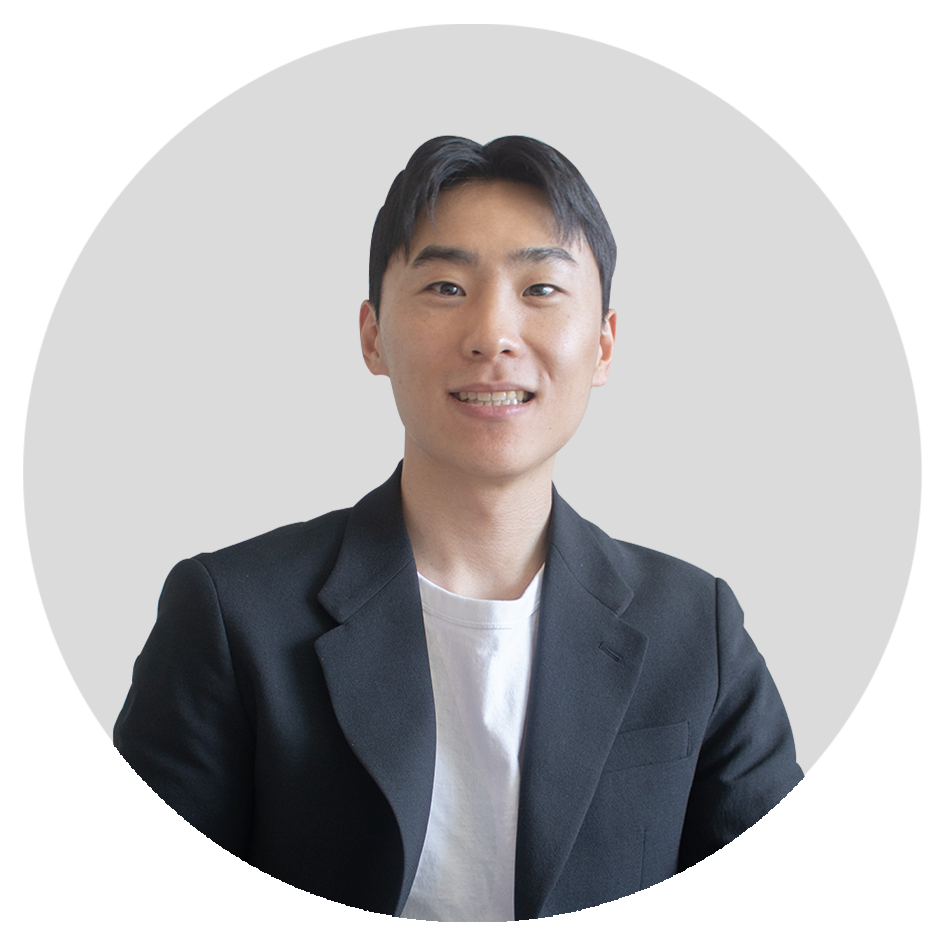

구병기
콘텐츠 마케터
브랜드가 믿고 선택할 수 있는 콘텐츠 마케터의 바른기준을 제안합니다.
About
커머스 브랜드의 콘텐츠를 직접 만들고, 그 콘텐츠가 팔리는지까지 확인해 온 마케터입니다.
광고대행사 이엠넷에서 2년간 홈퍼니싱, 가전, 패션 브랜드의 소재와 카피를 기획하고 운영했고,
지금은 무인양품과 일본 시장의 메노킨을 맡고 있습니다.
그 전에는 인테리어 브랜드 구룸샵을 직접 만들어 촬영부터 판매, 고객 응대까지 혼자 운영했고,
취미로 찍은 요리 영상은 최고 조회수 130만을 받았습니다.
핵심 역량
01콘텐츠를 직접 찍고 만듭니다
요리 숏폼을 기획부터 촬영, 편집, 자막까지 혼자 만들어 최고 조회수 130만을 받았습니다.
지금은 메노킨의 일본 큐텐 프로모션 소재를 일본어로 직접 제작해 운영합니다.
02커머스 브랜드를 처음부터 운영해 봤습니다
구룸샵을 기획, 상품과 상세 촬영, 자사몰과 SNS, 고객 응대까지 혼자 운영했고,
액세서리 브랜드 ffnab 도 제품 기획부터 판매와 인스타그램까지 직접 합니다.
03크리에이터 콘텐츠를 성과로 연결합니다
크리에이터 콘텐츠를 브랜드 광고로 태우는 메타 파트너십 광고를 여러 브랜드에서 운영했고,
메노킨 운영 제안에서는 인플루언서 서칭, 컨택, 시딩 사이클을 관리하는 시스템을 설계하고 만들었습니다.
04채널과 목적에 맞게 메시지를 바꿉니다
카카오 플러스친구 메시지를 후킹 문구와 유형으로 나눠 A/B 로 약 50건 보내며 한 브랜드 매출을 27% 올렸습니다.
9:16 과 1:1 은 같은 영상이 아니라서 잘리는 영역에 맞춰 다시 구성합니다.
05성과를 보고 콘텐츠를 고칩니다
변수 하나만 바꿔 같은 조건에서 비교합니다. 지누스에서 7개월간 A/B 13건을 판정해
GFA 매체 ROAS 를 875% 에서 1,120% 로 올렸고, 판정은 다음 달 운영안의 출발점으로 넘깁니다.
06반복은 AI로 줄이고, 시간은 기획에 씁니다
리뷰 10만 건을 20분에 읽는 분석 에이전트, 소재 제작을 2시간에서 10분으로 줄인 에디터로 팀 반복 업무를 40% 줄였고,
2026년 7월 사내 AI 활용 우수 사례로 전사 발표를 했습니다.
Skill Set
콘텐츠 제작
Photoshop, Illustrator, Figma, Final Cut Pro ｜ 숏폼 기획, 촬영, 편집, 자막 ｜ 상세페이지 제작 ｜
규격별 소재 구성(9:16 · 1:1 · 16:9) ｜ 일본어 프로모션 소재 ｜ 생성형 AI 장면 합성
SNS와 크리에이터
인스타그램 릴스와 피드 ｜ 카카오 플러스친구 메시지 A/B ｜ 메타 파트너십 광고 ｜
인플루언서 서칭, 컨택, 시딩 관리 시스템 설계 ｜ 리뷰 기반 소구점 발굴
매체와 측정
메타, 구글, 네이버, 카카오, 싱글원(큐텐 재팬), 오늘의집, TikTok, 크리테오 ｜ GA4, GTM, BigQuery, Looker Studio
AI와 자동화
Claude, OpenAI Codex 기반 에이전트 제작 ｜ 리뷰 크롤링과 분석 ｜ 소재 제작과 세팅 자동화 ｜ 대상 선정부터 맞춤 메일 발송까지 자동화
SELF-INTRODUCTION
자기소개서
(주)코리아펠라직 콘텐츠 마케터 지원
01
두 번째 지원, 이번에는 콘텐츠입니다
지원 동기
지난 8월 코리아펠라직의 퍼포먼스 마케터 공고에 지원하면서, 메타 광고 라이브러리에 올라와 있던 가시제거연구소 광고 31건을 하나씩 읽었습니다.
주력은 굽고, 튀기고, 접시에 담는 조리 장면 영상이었고, 레시피를 보여주는 소재는 명란에서 생선까스까지 넓어지고 있었습니다.
이 브랜드에서 성과를 가르는 건 매체 세팅보다 콘텐츠 자체라고 봤습니다. 그래서 이번에는 그 콘텐츠를 만드는 자리에 지원합니다.
다시 지원하게 된 계기는 부산전집입니다. 8월 말부터 가시제거연구소와 부산전집 계정에 광안리 피서객 인터뷰, 영어 자막을 단 투어 영상이 올라오는 것을 봤습니다.
가시제거연구소가 쌓아 온 채널 옆에서 두 번째 브랜드가 처음부터 만들어지고 있는 때입니다.
저는 구룸샵과 ffnab 에서 브랜드를 처음 세우고, 상품을 찍고, SNS 에 올리고, 문의를 받는 일을 혼자 해봤고,
대행사에서는 완성된 브랜드를 받아 성과를 끌어올리는 일을 2년간 했습니다. 이 두 가지가 한 자리에서 필요한 때가 지금이라고 생각했습니다.
그리고 저는 먹는 콘텐츠를 좋아합니다. 취미로 요리 영상을 찍어 130만 조회까지 받아 본 저에게,
냉동 그대로 굽는 순살 생선과 5분이면 부쳐지는 전은 찍고 싶은 장면부터 떠오르는 제품입니다.
02
입사하면 이렇게 일하겠습니다
이 직무에서 할 수 있는 일
찍고, 올리고, 판정해서 다음 콘텐츠로 넘기겠습니다
기획, 촬영, 편집, 자막까지 제 손으로 끝낼 수 있어 매주 새 콘텐츠를 낼 수 있습니다.
올린 뒤에는 광고에서 하던 방식 그대로 보겠습니다. 후킹 유형, 길이, 포맷 중 하나만 바꿔 같은 조건에서 비교하고,
판정을 기록해 다음 달 기획의 출발점으로 넘깁니다. 지누스에서 7개월간 13건의 테스트를 이렇게 판정했습니다.
오가닉 콘텐츠도 이렇게 쌓이면 다음에 무엇을 찍을지 감이 아니라 기록으로 정할 수 있습니다.
크리에이터 협업을 한 사이클로 돌리겠습니다
메노킨 운영 제안을 준비하며 인플루언서를 찾고, 연락하고, 제품을 보내는 사이클을 관리하는 시스템을 직접 설계해 만들었습니다.
조건에 맞는 대상을 골라 분석하고 맞춤 문구로 연락하는 흐름은 제가 상시로 돌리고 있는 영업메일 에이전트와 같은 구조입니다.
리스트업과 컨택에 드는 시간은 줄이고, 그 시간을 크리에이터와의 관계에 쓰겠습니다.
시딩으로 나온 콘텐츠는 올라가고 끝나지 않게 하겠습니다. 반응이 좋은 콘텐츠를 메타 파트너십 광고로 다시 태워 판매로 잇는 일은 제가 광고 쪽에서 계속 해 온 일입니다.
새 채널과 해외 진출에도 바로 보탬이 되겠습니다
부산전집은 이제 막 문을 연 채널이라 어떤 포맷이 맞는지 빨리 찾아야 합니다. 첫 달은 가시제거연구소와 부산전집에 올라온 콘텐츠를 포맷별로 나누고 반응을 비교하는 일부터 하겠습니다.
해외 진출을 준비한다는 소식도 봤습니다. 지금 메노킨의 일본 큐텐 프로모션 소재를 일본어로 직접 만들어 운영하면서,
일본 소비자가 무엇을 보고 사는지, 현지 플랫폼의 프로모션이 어떻게 돌아가는지 가까이서 보고 있습니다. 이 경험도 함께 쓰겠습니다.
순살 생선의 바른기준을 세운 브랜드에서, 콘텐츠의 바른기준을 함께 세우고 싶습니다.
구병기